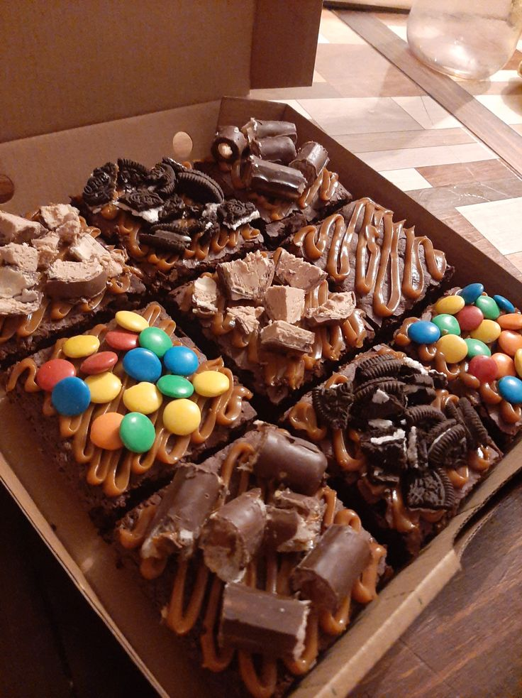

Ingredientes
- 200 g de chocolate
- 120 g de mantequilla
- 3 huevos
- 150 g de azúcar
- 100 g de harina
Preparación general
- Derretir el chocolate con la mantequilla.
- Mezclar los huevos con el azúcar.
- Unir las dos mezclas y agregar la harina.
- Colocar en un molde y hornear hasta que esté listo.